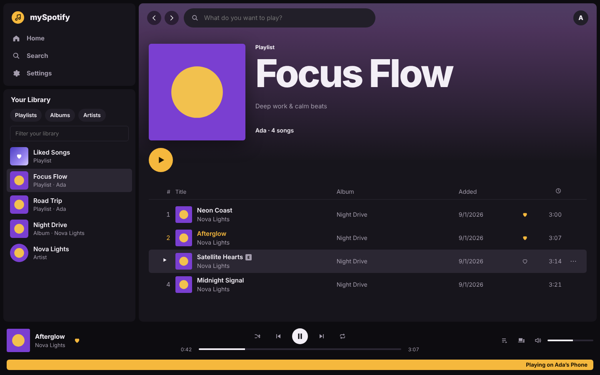
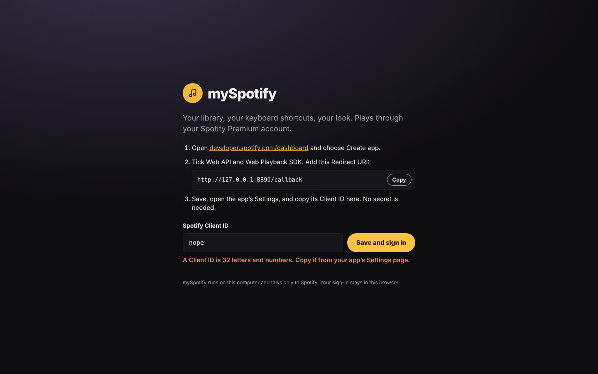

We pointed Clearbox at Spotify's Windows download to learn what it does to a PC. Then we built mySpotify, a local player on Spotify's official API, and checked our own code with the same tool.
We took SpotifySetup.exe from download.scdn.co and ran clearbox scan … -t binary-triage. Clearbox decoded the PE headers, import table, version resource and certificate table with struct, and pulled out readable ASCII and UTF-16 strings. Nothing was loaded or executed.
| SHA-256 | b7d990f2bfcbf835af4da7e7579e2a8c019d5419f49fd347c7e2a0cce1f1258b |
|---|---|
| Identity | Spotify Installer · Spotify Ltd · 1.3.4.258.gc60b10b0946a · original filename installer_stub.exe |
| Format | PE32+ x86-64, Windows GUI, 1,074,664 bytes, MSVC, deterministic build timestamp |
| Signed by | Spotify AB, via DigiCert Trusted G4 Code Signing (2021 CA1), with a DigiCert 2025 timestamp. Names come from the certificates; Clearbox does not validate the chain. |
| Hardening | ASLR, high-entropy ASLR, DEP/NX |
The real client is fetched at install time from Spotify's CDN, with the CPU architecture filled in.
None of the 8 imported DLLs is a network library, but the binary names WININET.dll and imports LoadLibraryExW and GetProcAddress. It most likely loads WinINet at runtime; confirming that needs a disassembler. A scan that read only imports would have missed the network entirely.
The Store package name sits in the UTF-16 string table, and the binary loads the WinRT app-model API set.
Four system-wide locks stop the installer and the updater from running over each other.
Imports cover writing, moving and deleting files, writing the registry, changing file permissions, refreshing the shell, and launching programs. Strings name the files it swaps. There is no elevation API.
What it couldn't tell us: anything about the app's screens or features. Those live in the full client the stub downloads. The mySpotify repo includes a script that runs the same triage on an installed %APPDATA%\Spotify folder.
Some open-source players reimplement Spotify's private streaming protocol. That route breaks Spotify's terms, breaks when Spotify changes things, and puts accounts at some risk. We mapped each feature a user can see in the desktop app to Spotify's public Web API and Web Playback SDK instead, and checked the map against the API changes Spotify made in February 2026.
| Desktop feature | Official API in mySpotify |
|---|---|
| Home: recents, top artists | /me/player/recently-played · /me/top/{artists,tracks} |
| Library sidebar and Liked Songs | /me/playlists · /me/albums · /me/following · /me/tracks · PUT|DELETE /me/library |
| Search with a top result | /search (10 per type since 2026) |
| Playlist, album, artist pages | /playlists/{id}/items (was /tracks) · /albums/{id} · /artists/{id}/albums |
| Artist “Popular” | top-tracks was removed; falls back to /search artist:"…" |
| Player bar, Connect devices, queue | Web Playback SDK · /me/player/* · /me/player/devices · /me/player/queue |
| Lyrics, Canvas, friend activity | No public API, so not included |
mySpotify is one Python file that serves the app on 127.0.0.1, plus about 1,400 lines of plain JavaScript and CSS with no build step. Sign-in uses OAuth with PKCE, so there is no secret to leak. Album art tints each page, every control has a keyboard shortcut, and media keys work. Spotify's installer writes to the registry, changes file permissions and runs an updater. mySpotify writes nothing outside its own folder.


It's tested without a Spotify account. 18 browser checks run the real app against a mocked Spotify, covering sign-in gating, the 2026 response shapes, playing, liking, search limits, the top-tracks fallback, device transfer, keyboard control and phone width. 6 server tests cover path traversal, security headers and host checks.
Clearbox's security-surface scan of mySpotify found two capability sites, both network requests: the Spotify Web API client and Spotify's token endpoint. It found no process launches, file writes, registry access or dynamic code.
You need Spotify Premium, Python 3.9 or newer, and Edge, Chrome or Firefox. Create a free app at developer.spotify.com with the redirect URI http://127.0.0.1:8888/callback, then:
git clone https://github.com/vosbek/my-spotify cd my-spotify start.cmd # or: py myspotify.py
Paste your Client ID, sign in, and press play. In Edge, choose Apps › Install this site as an app to give it its own window.